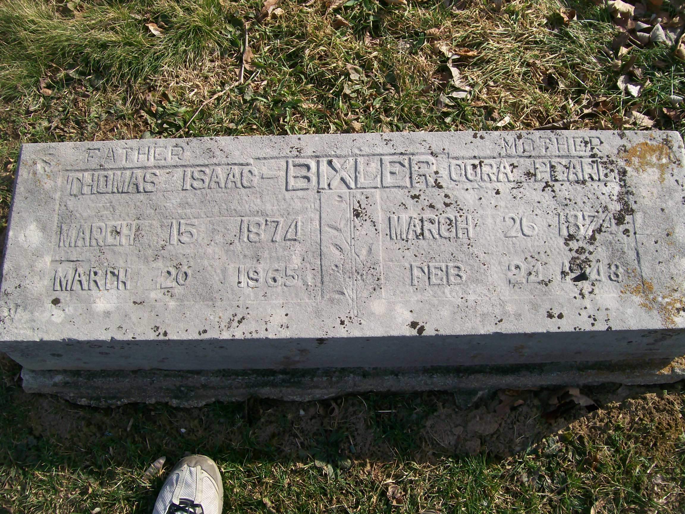
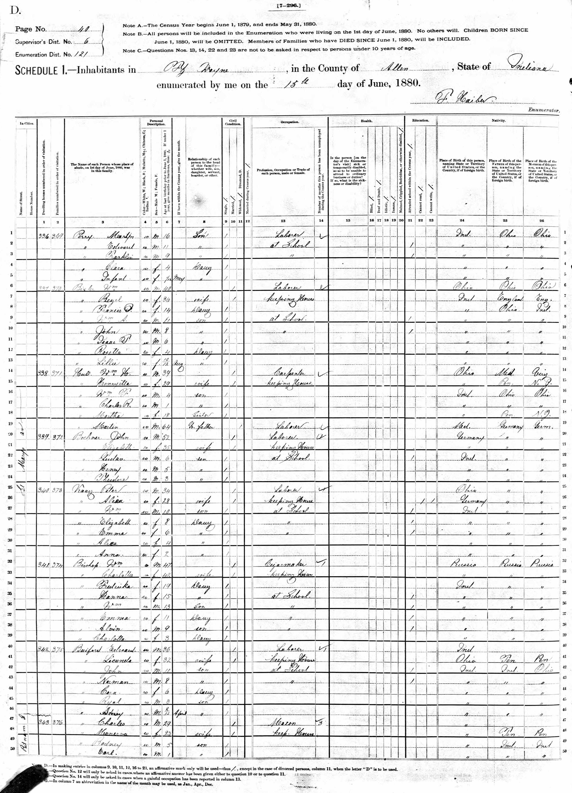
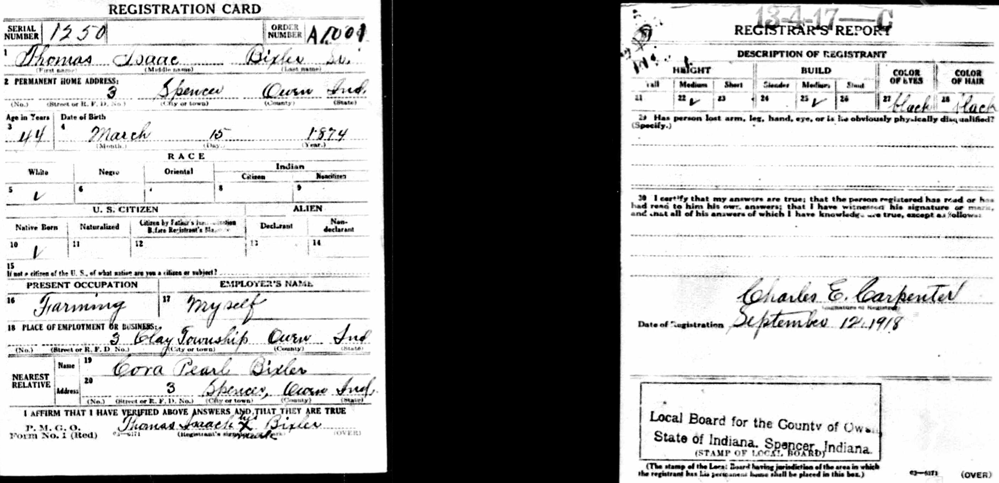
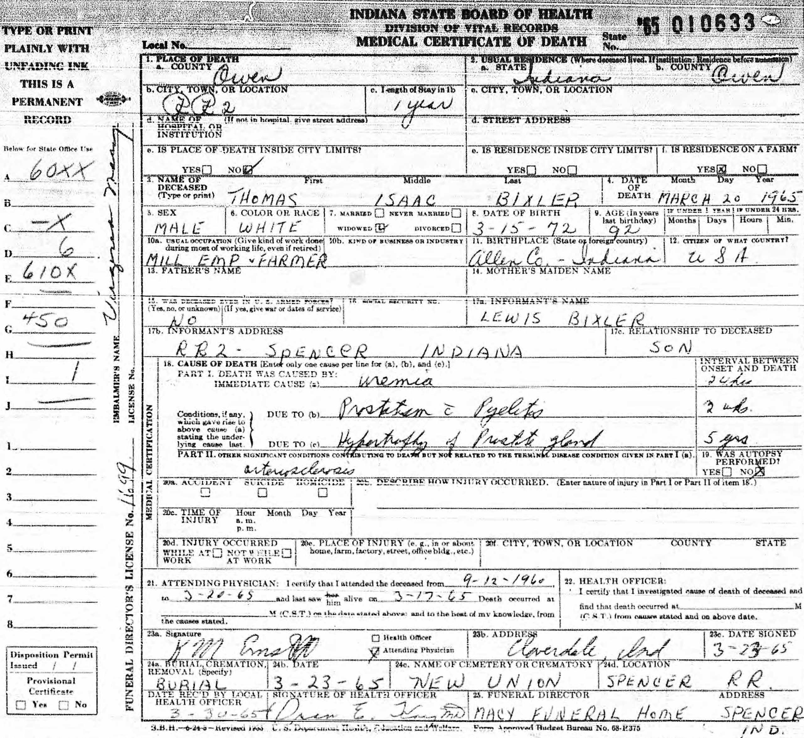
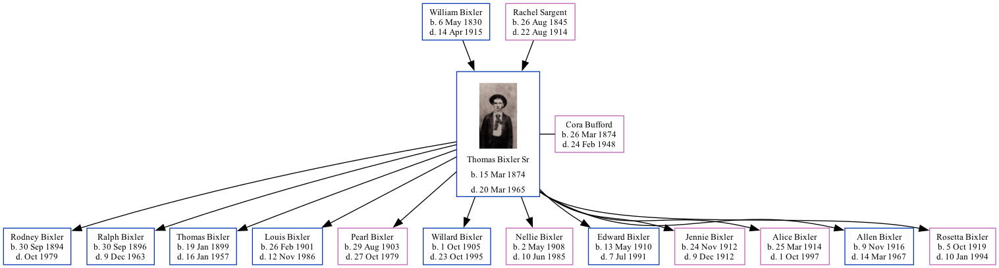

Thomas Isaac Bixler Sr 1874 - 1965 [ Home ] | [ Calendar ] | [ Surnames Index ] | [ Family History ]A farmer and the son of William Bixler (a laborer) and Rachel Sargent Thomas Bixler , the third cousin three-times-removed on the mother's side of Nigel Horne , was born in Fort Wayne, Allen, Indiana, USA on Mar 15, 18741 and married Cora Bufford (with whom he had 12 children: Rodney Jay , Ralph Voris , Thomas Isaac , Louis Edward , Pearl Luella , Willard Wallace , Nellie Mae , Edward Gabrial , Jennie , Alice Vesper , Allen Ellsworth and Rosetta ) in Fort Wayne on Apr 2, 18922 .
Throughout his life, Thomas lived in several places: on St Marys Avenue, Fort Wayne, Allen, Indiana, USA on Jun 15, 18804 ; at his birthplace on Jun 9, 1900; in Washington, Owen, Indiana on Apr 21, 19105 ; in Spencer, Owen, Indiana on Sep 12, 19183 ; in Clay, Owen, Indiana on Feb 10, 19206 ; on Joe Zink Road, Clay, Owen, Indiana on Apr 2, 19308 ; and in Clay, Owen, Indiana on May 22, 19407 .
He died on Mar 20, 1965 in Spencer, Owen, Indiana1 (uremia (kidney infection)) and was buried there at New Union Cemetery on Mar 23, 1965 (a drizzly day)1 .
Parents William Green was born on May 6, 1830Rachel was born on Aug 26, 1845Children Rodney Jay was born on Sep 30, 1894Ralph Voris was born on Sep 30, 1896Thomas Isaac was born on Jan 19, 1899Louis Edward was born on Feb 26, 1901Pearl Luella was born on Aug 29, 1903Willard Wallace was born on Oct 1, 1905Nellie Mae was born on May 2, 1908Edward Gabrial was born on May 13, 1910Jennie was born on Nov 24, 1912Alice Vesper was born on Mar 25, 1914Allen Ellsworth was born on Nov 9, 1916Rosetta was born on Oct 5, 1919Citations U.S., Find A Grave Index, 1600s-Current Ancestry.com Operations, Inc. United States Marriages - Findmypast U.S., World War I Draft Registration Cards, 1917-1918 Us Census 1880 - Findmypast (was age 6 and the son of the head of the household) US Census 1910 - Findmypast (was age 36 and the head of the household) US Census 1920 - Findmypast (was age 45 and the head of the household) 1940 United States Federal Census 1930 United States Federal Census Media Thomas Bixler Thomas Bixler - Cora Buford - headstone  1910 US Census 1880 US Census  1900 US Census WWI Draft  1920 US Census 1940 US Census Thomas Bixler - death certificate  1930 US Census Indiana, Marriages, 1780-1992 - R_328052819 United States Marriages - R_1072329144 US Census 1880 - USC/1880/1000117451142 Family Tree Map
Generated by ged2site . Last updated on Feb 28, 2025